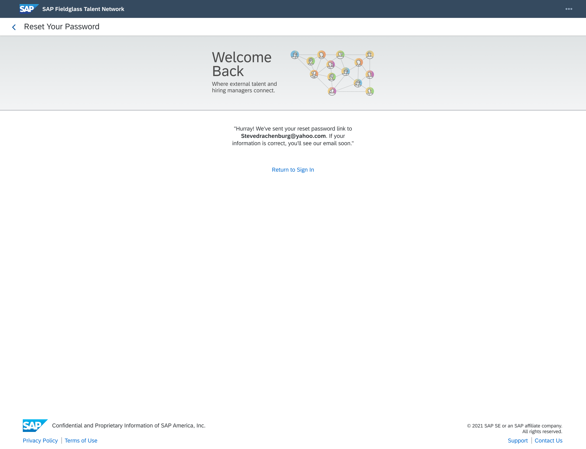
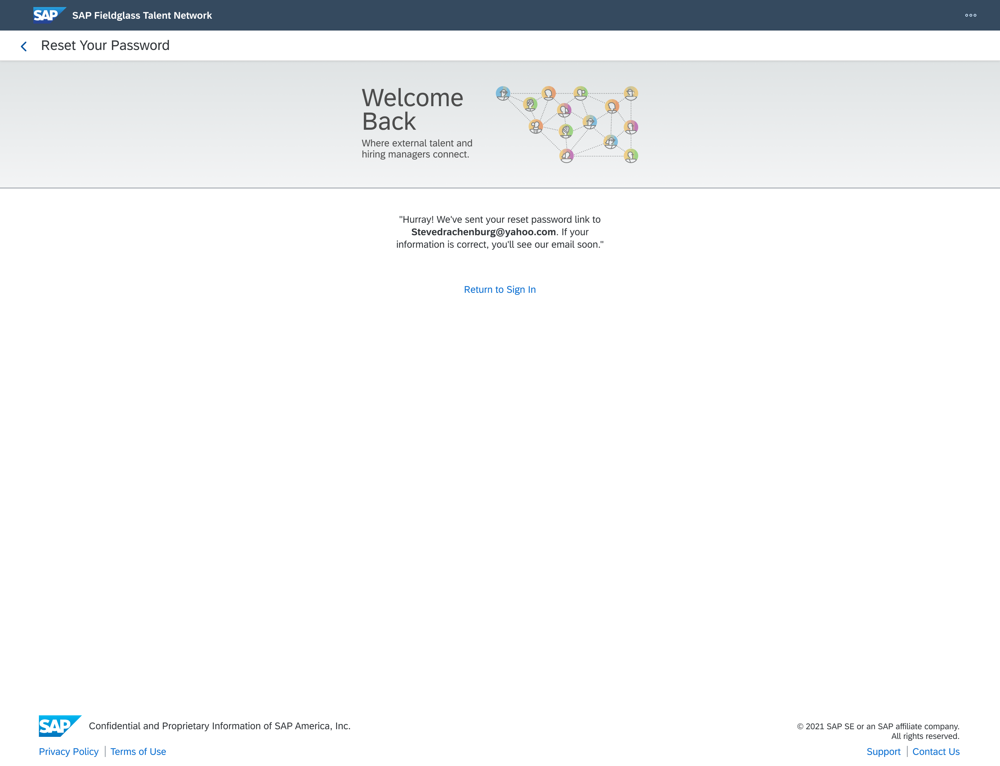
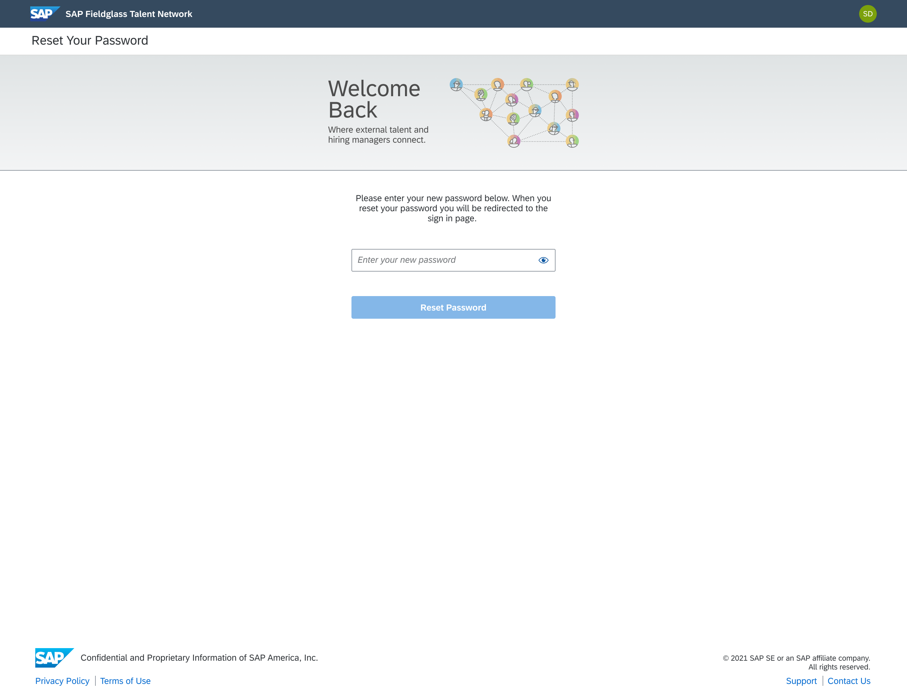
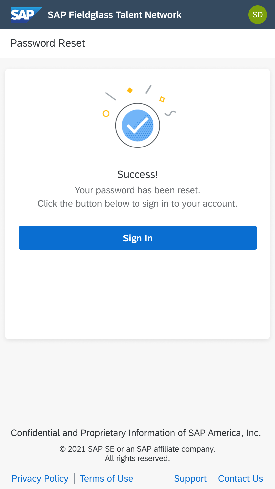
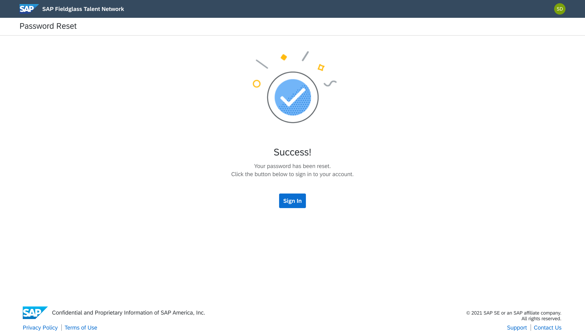

Fieldglass Talent Network is a responsive website set to release November 2021. It was created to accomodate for the growing gig worker economy and allows companies to search for independent contractors or freelancers that perform short-term work.
Work alongside a senior designer to help build mobile and desktop screens for different flows throughout the application.
The first flow that I worked on was the reset password flow. Here are a few screenshots for both the mobile and desktop views.
Enter Email:


Email Confirmation Message:
 

Change Password:
Password Change Successful:
 This is a project I am still working on. Check back later for more updates.